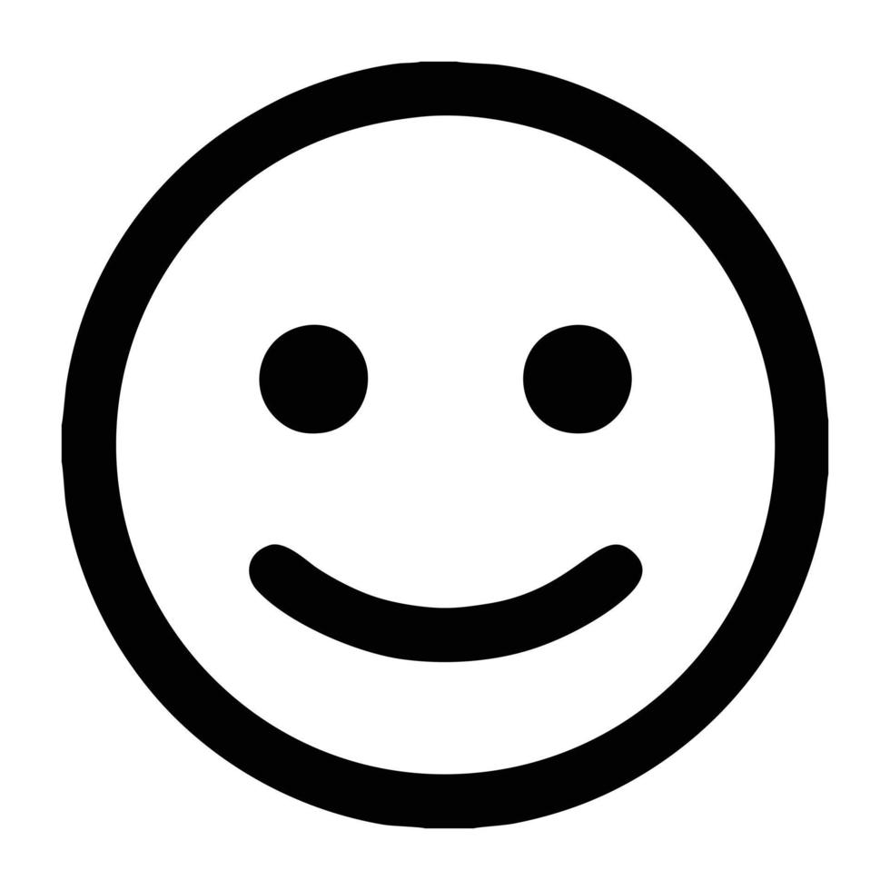
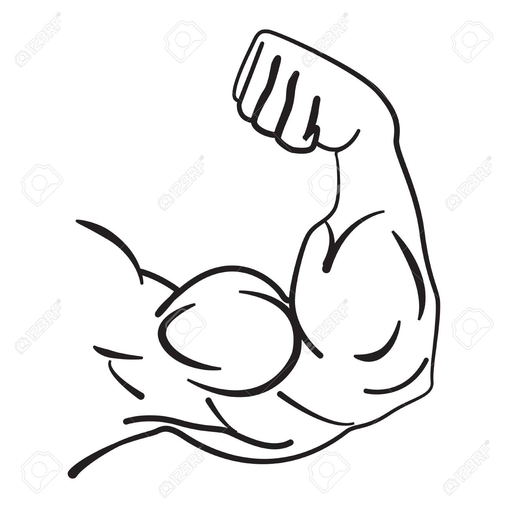

Descripcion Basica
Julian es un chico de 17 años nacido en argentina. Julian nació el 8 de mayo de 2007. Sus Padres son Gerardo Corbani y Mariana Miño. Julian tiene 2 hermanos mellizos llamados Juan Martin y Emilia.

Aficiones
Las aficiones de Julian son jugar al futbol, pasar tiempo en redes sociales, juntarse con amigos y programar.

Fortalezas
Las fortalezas son trabajar en equipo, facil comprension y adaptabilidad a cualquier situacion. Lenguejes manejados: Html, Css, Javascript, C++, Java.